The challenge: better content, better AI
Loopio helps teams answer RFPs and security questionnaires from a Library of approved content. As Libraries grew, outdated, duplicated, and conflicting answers accumulated. Maintenance was time-consuming, and unreliable source content undermined both search and AI-generated answers.
Library managers needed to find and resolve issues without manually investigating every answer.
Library maintenance was the second most-cited churn reason. Better content quality was also critical to AI performance.
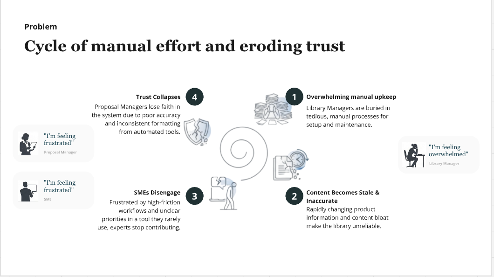
One customer removed 76% of their Library in a six-month cleanup; their AI answer acceptance rate then improved by 26%. The opportunity was clear, but which maintenance problem should an agent solve, and how much responsibility should it take?
Four opportunities emerged from discovery
Customer feedback, UserVoice, and internal teams pointed to four recurring problems.
Duplicate, outdated, and conflicting content accumulated over time.
Subject matter experts struggled to keep pace with reviews.
New customers faced substantial work preparing content for import.
Changes made elsewhere didn't reliably flow back to the Library.
Finding the right problem for an agent
Rather than jump straight to a solution, we created four low-fidelity concepts addressing different maintenance needs. In customer sessions, we asked people to rank their pain points, discuss their experience with AI, and react to relevant concepts.
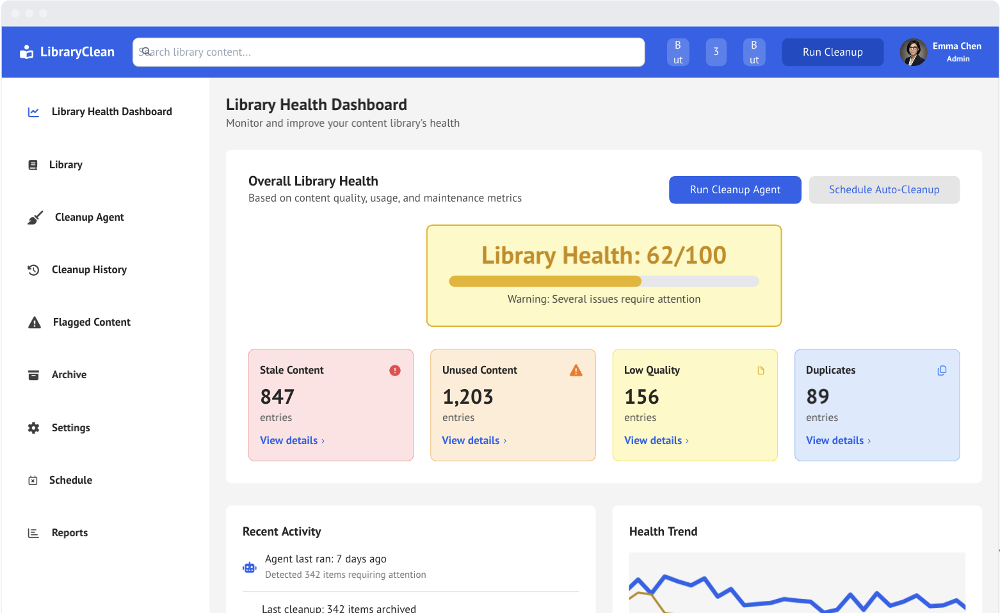
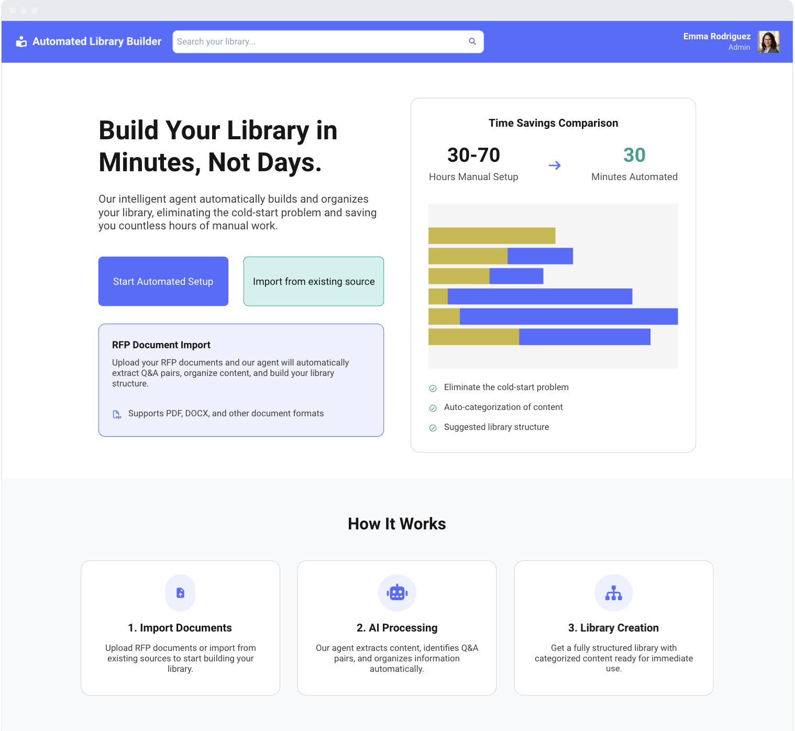
Why cleanup won
Library bloat and decay was the top-ranked pain point for 6 of 10 customers. It was a strong fit for AI: the Librarian could do the investigative work, while a human made consequential decisions.
Content that might no longer be accurate.
Entries answering substantially the same question.
Entries making incompatible factual claims.
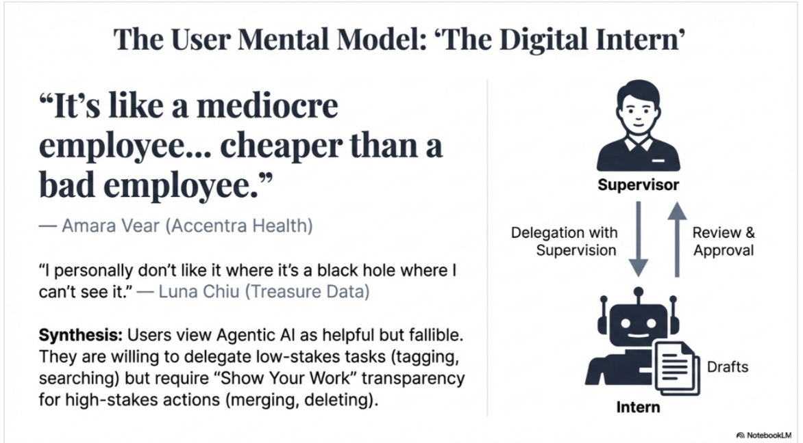
Defining what the Librarian should do
Across all three cleanup problems, I defined a consistent model: investigate → explain → recommend → act with approval. Longer term, the Librarian could help prevent issues before they entered the Library.
Identify an issue and show the relevant content, reasoning, and evidence.
Suggest a resolution, but leave updates, merges, and deletions to the reviewer.
Make it easy to act quickly or inspect more detail before deciding.
An AI agent doesn't have to be a chatbot
Once we knew what the Librarian should solve, I explored how it should fit into the workflow. The same intelligence could be delivered through three very different interaction models.
01 / Chat-based agent
Flexible for questions and explanations, but difficult to surface and work through a large number of existing issues. The amount of content needed for comparisons wouldn't scale well in chat.
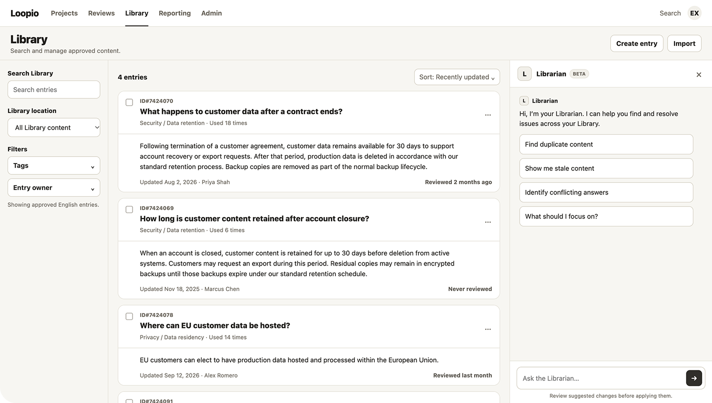
02 / Embedded in projects
Useful for catching issues as people worked, but couldn't provide a complete view of existing Library maintenance.
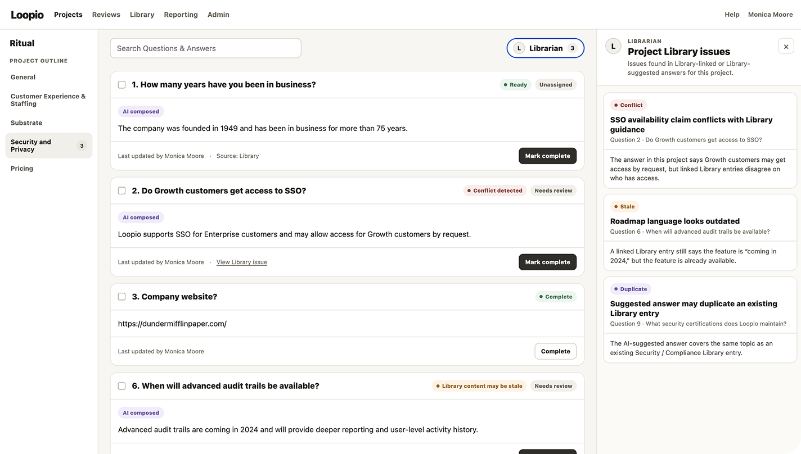
03 / Structured maintenance queue
Supported a backlog of issues, rich comparisons, and persistent review state, while allowing the Librarian to do the investigation and recommend actions.
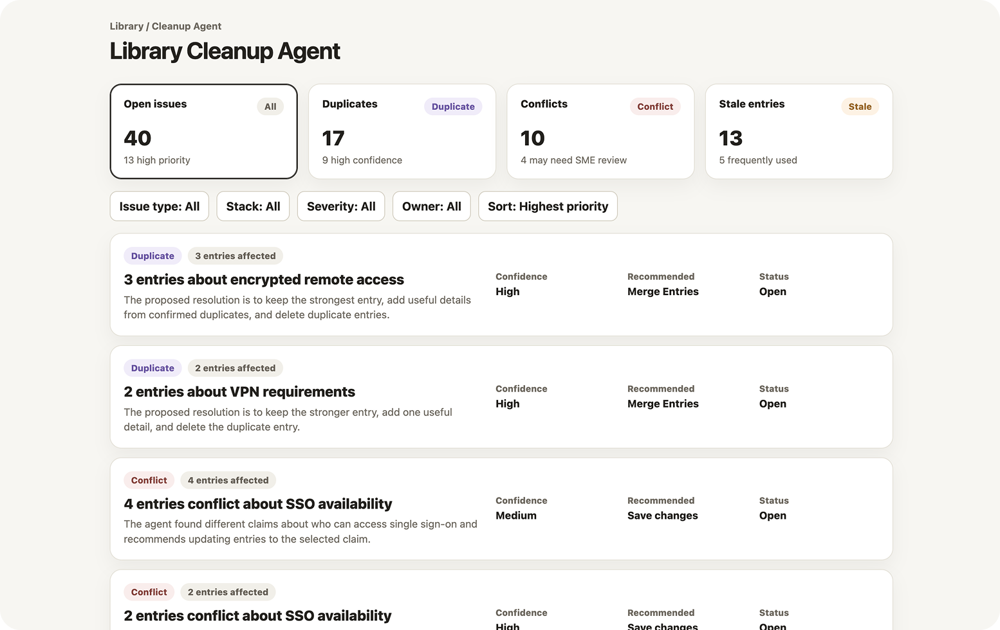
| Evaluation criteria | Chat | In project | Queue |
|---|---|---|---|
| Proactively surfaces existing issues | No | Partial | ✓ |
| Supports backlog / triage | No | No | ✓ |
| Rich comparison context | Partial | Partial | ✓ |
| Persistent workflow state | No | No | ✓ |
| Good for explanation | ✓ | Partial | Partial |
Library cleanup involved reviewing large volumes of content, comparing evidence, and tracking decisions over time. That wouldn't scale well as a conversation. A queue gave the work structure; conversational AI could still help explain recommendations when needed.
The pivot: I was designing another maintenance queue
The queue was the right interaction model, but my initial standalone Cleanup Agent would have introduced another destination. Loopio already divided maintenance across Reviews from Library, Reviews from Projects, and Duplicate Cleanup.
Rather than add a fourth place to work, I proposed one unified Reviews experience, with Librarian assistance woven into existing and new review types.
Before
After
Project suggestions · Scheduled reviews · Library cleanup
Librarian assistance across every reviewDesigning the review experience
Across the high-fidelity screens, I designed for two ways of working: reviewers could move quickly by following the Librarian’s recommendation, or dig into sources and change the proposed action when they disagreed. The primary action followed the recommendation, but users could still edit content and choose a different resolution.
One queue, with enough context to prioritize
I brought scheduled reviews, project suggestions, and cleanup issues together, while keeping type, source, assignee, and due date visible. The goal was to help managers decide what to tackle next without opening each item or switching tools.
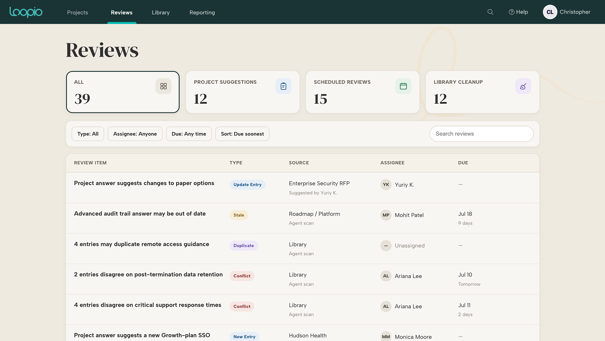
Recommendations first, evidence when needed
The Librarian’s recommendation and corresponding primary action are immediately visible, so routine reviews can move quickly. Sources and reasoning are available for anyone who wants to verify the suggestion, while editing and alternative actions remain accessible. The AI provides a default, not a mandate.
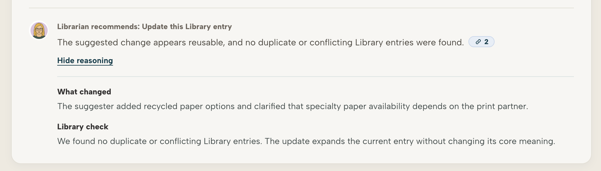
Stale content: make the recommended update quick, but optional
The Librarian explains why an answer may be outdated and puts its suggested resolution on the fastest path. Reviewers can inspect sources, edit the answer, delegate it, or dismiss the issue instead of accepting the recommendation.
Duplicates: make consolidation easy to review
Because duplicate review is fundamentally a comparison task, I tested both stacked and side-by-side column layouts. Users preferred columns because they made similarities and differences easier to scan. I also explored having the Librarian generate a merged answer that preserved unique information from duplicates. Customers liked the concept, but we scoped it out to ship sooner. The more focused approach recommended which entry to keep while letting users inspect the duplicates and control the resolution.
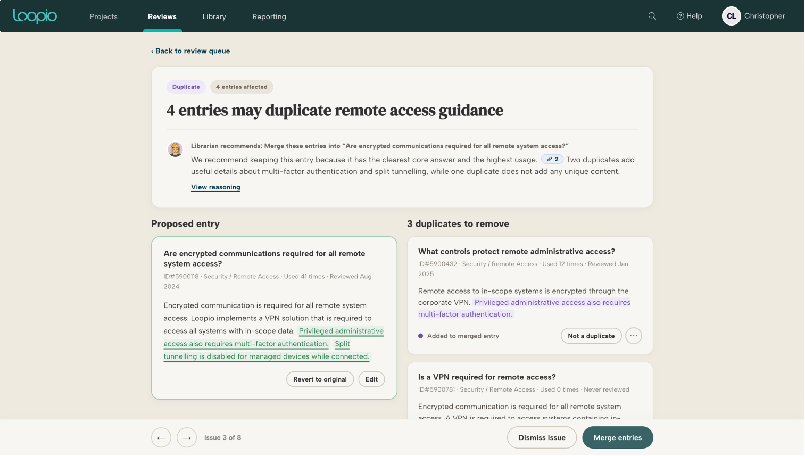
Conflicts: resolve facts, not just individual answers
We were moving toward a fact-based Library where AI could understand claims about a company. The same outdated claim might appear in several answers, so simply choosing a winning entry wouldn’t solve the underlying inconsistency. I grouped entries by competing claims, allowing users to evaluate the evidence, choose the correct fact, and review the affected answers.
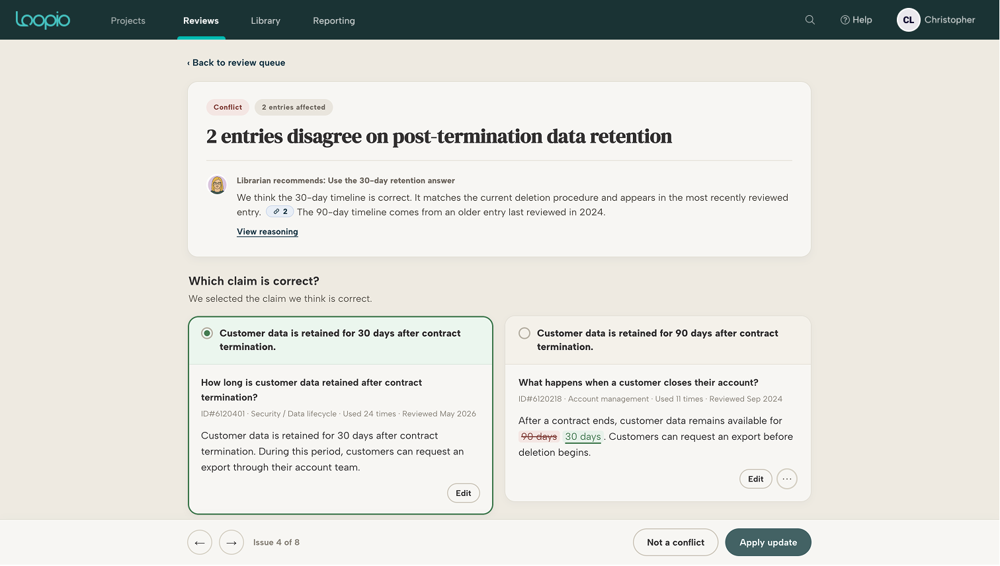
Project suggestions: check new answers against existing knowledge
Today, users have to investigate whether a new answer from a project should be added to the Library, including whether it duplicates or conflicts with existing knowledge. The Librarian could take on that investigation, then recommend creating a new entry, updating an existing one, or leaving the Library unchanged, while keeping the final decision with the reviewer.
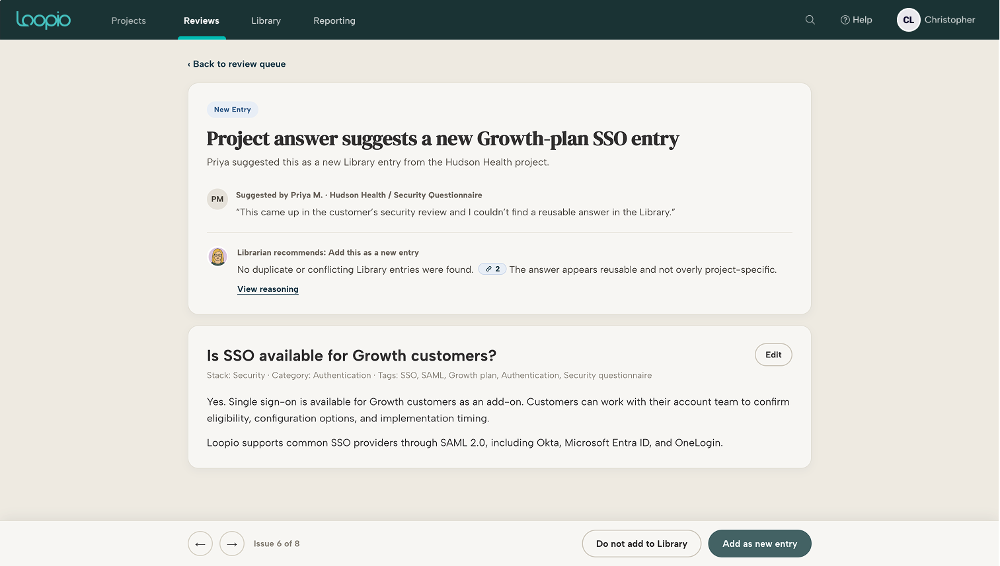
Scheduled reviews: reduce investigation, not accountability
Scheduled reviews also require manual investigation. Reviewers need to check whether content is still accurate, examine relevant context, and decide what should change. The Librarian could do much of that investigation upfront, surface the evidence, and recommend an action, so reviewers can move faster while remaining responsible for what is approved.
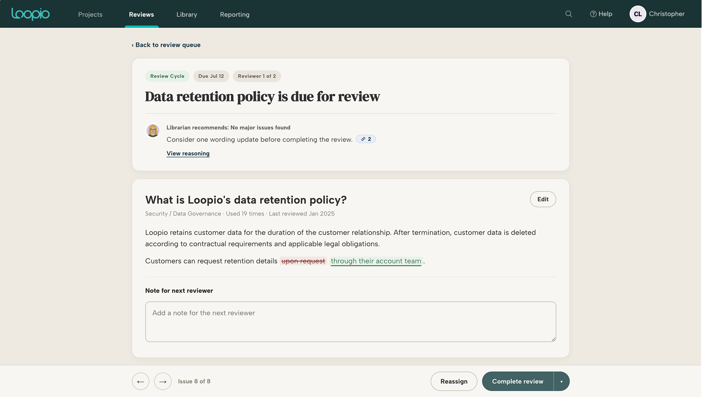
What usability testing reinforced
I tested whether customers could understand an issue, evaluate the Librarian's recommendation, inspect the evidence, and confidently choose what happened next.
Customers welcomed having review and cleanup tasks together instead of moving between areas.
Sources and reasoning were essential to judging whether an AI recommendation was credible.
Customers wanted help deciding, but weren't comfortable with automatic updates to the Library.
“I like that it’s all in one queue instead of jumping between different areas.”
“If it shows me the source and why it’s suggesting the change, I’d feel comfortable using it.”
“I wouldn’t want it to just update things automatically.”
A phased path from concept to product
We scoped implementation in stages: first build unified Reviews using existing infrastructure, then add cleanup workflows (duplicates, stale content, conflicts), and finally bring Librarian recommendations into existing reviews as agent capabilities matured.
The unified Reviews design reached engineering handoff. The broader agent experience had been tested with customers and was being scoped when I left Loopio; it wasn't a fully launched product.
Where the interaction model could go next
Choosing structured UI first didn’t mean abandoning conversation. My future vision combined the strengths of both, while increasing autonomy only where risk and trust justified it.
Bring conversation into the Reviews workflow
A contextual chat alongside each review could let users ask follow-up questions, inspect evidence, refine recommendations, and act without losing their place. Conversation would complement the structured workflow, not replace it.
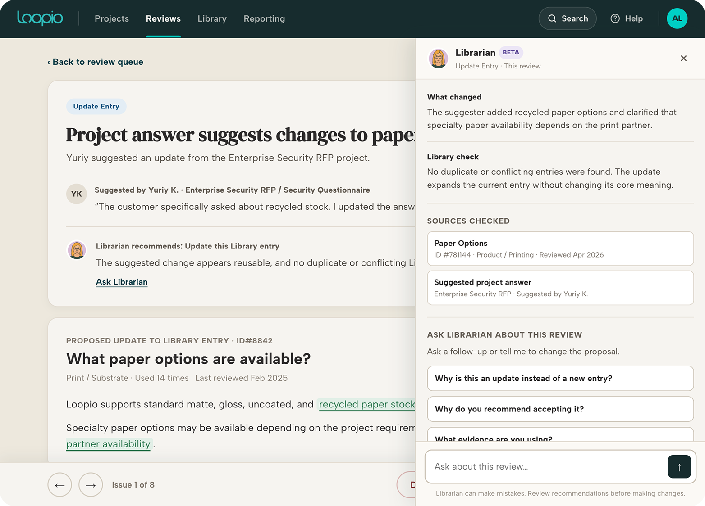
Make maintenance more proactive
Over time, the Librarian could prioritize high-impact maintenance, catch duplicates and conflicts earlier in the workflow, and coordinate follow-up work across owners and reviewers, preventing issues instead of only cleaning them up later.
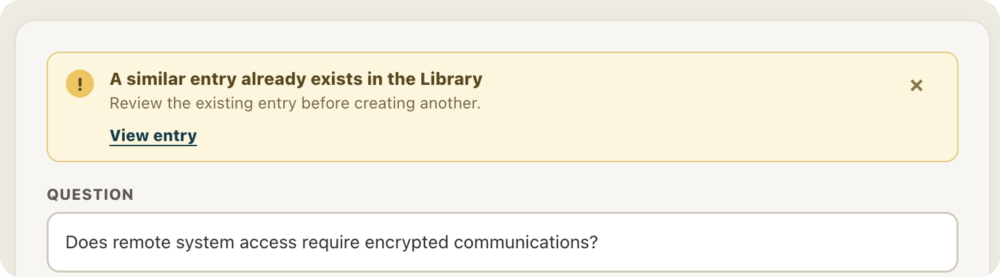
Increase autonomy as the Librarian earns trust
Not every action needs the same oversight. The Librarian could start by suggesting actions for users to approve, then gradually automate low-risk, reversible tasks. High-impact content changes would remain reviewable, with users in control.
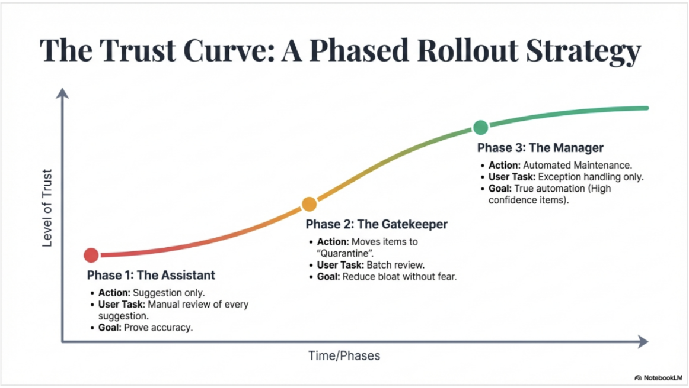
Design the interaction for the job, not the technology
This project reinforced that an agent doesn't need to be chat-first. For triage, comparisons, persistent state, and high-impact decisions, structured UI can be the better interface. Conversation is valuable when users need flexibility or explanation, and automation should expand as trust is earned.